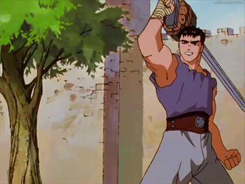

Hi, I'm David
I am currently a full time student at UMBC, my major is Information Systems. I transfered from Howard Community College. I was born in Boston, Massachusetts. I plan to travel to as many places as possible in the future. One of the first palces on the list is Paris, France. This webpage for now will just be used as a blog to practice html, css and javascript.
Intrests
- Web and Mobile Development
- Blockchain Technology
- Artificial Intelligence
- Anime
- Basketball
- Video Games
My top 5 anime list is superior to everyone else's
Okay so first of all I dont really mind what anime you think are the best 5, everyone has their own taste in entertainment. Some people tend to develop a supereriority complex when discussing these types of things. Everyone is entitled to their own opinion and at the end of the day if you resonate with a show more than someone else thats just your experience.
- 1. Berserk(1997)
- 2. Death Note
- 3. Hunter X Hunter
- 4. Steins Gate
- 5. Sword Art Online
Why Berserk is at the top of my list
Berserk is an anime based in the medieval times that in my opinion has one of the greatest plot twists ever. The show also has one of the best protagonists in the history of anime, Guts.
The moment when the plot turns on its head is not untill the 24th episode. The entire world and storyline is expanded. As a watcher you build attachments to certain characters but as the show comes to an end you watch everything change, and the real story begins. Berserk is a manga written by Kentaro Miura, the series has 363 Chapters and 40 volumes. The creator of Berserk has passed away earlier this year so unfortunately, there will never be a proper ending to the story. Neverless in my optinion the 1997 adaptation to this manga is the one of the best anime of all time.